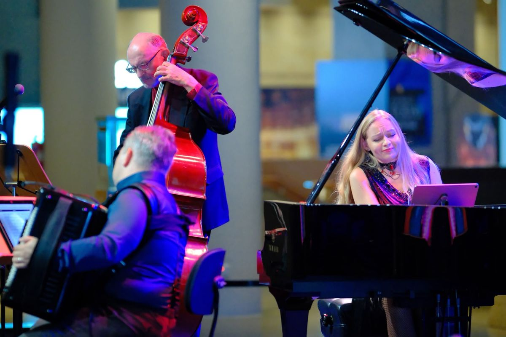
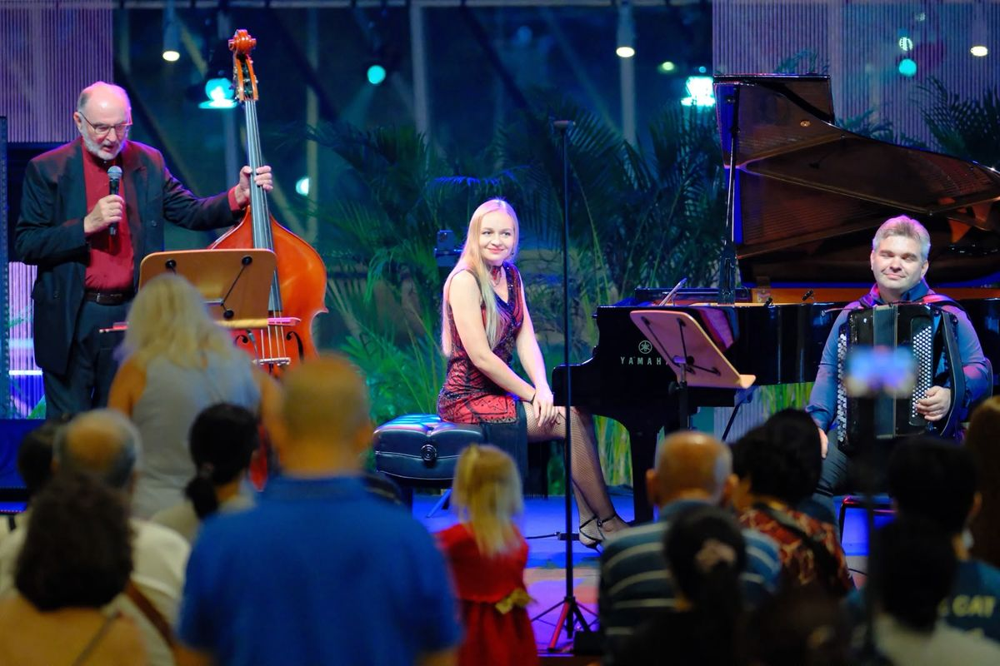

Trio de Tango
Piazzolla, at the volume he meant it.
Accordion, double bass and strings. Aleksandr Farseev, Guennadi Mouzyka and Ksenia play tango the way it was written to be played — close, loud where it should be loud, and quiet enough in the middle that a room of two hundred people stops talking.

From the performance
Crossing Borders
Stills from the set — the full performance runs above. The programme moves from Gardel's early tango canción through Piazzolla's nuevo tango, with the bass carrying the walking line and the accordion taking the bandoneón's part.



The trio
Who plays
 Aleksandr Farseev
Aleksandr Farseev
Accordion & bayan. Founder of Accordion Singapore. Guennadi Mouzyka
Guennadi Mouzyka
Double bass. Principal Bass, Singapore Symphony Orchestra. Ksenia
Ksenia
Strings. Joins the trio for the tango programme.
Booking the trio
30, 45 or 60-minute sets. Acoustic indoors up to roughly 150 guests; we bring our own amplification for anything larger or outdoors. Send the date, venue and rough guest count and you'll get a straight yes-or-no with a fee, not a brochure.
Enquire on WhatsAppTrio de Tango
Пьяццолла — с той громкостью, какую он имел в виду.
Аккордеон, контрабас и струнные. Александр Фарсеев, Геннадий Музыка и Ксения играют танго так, как оно написано, — близко, громко там, где должно быть громко, и так тихо в середине, что зал на двести человек перестаёт разговаривать.
С концерта
Crossing Borders
Кадры с выступления — целиком оно идёт выше. Программа движется от ранних танго-песен Гарделя к нуэво-танго Пьяццоллы: контрабас ведёт шагающую линию, аккордеон берёт на себя партию бандонеона.
Состав
Кто играет
- Александр Фарсеев
Аккордеон & баян. Основатель Accordion Singapore. - Геннадий Музыка
Контрабас. Концертмейстер группы контрабасов, Singapore Symphony Orchestra. - Ксения
Струнные. Присоединяется к трио в программе танго.
Как пригласить трио
Программы на 30, 45 или 60 минут. В помещении играем акустически примерно до 150 гостей; для большего зала или улицы привозим свою подзвучку. Напишите дату, площадку и примерное число гостей — получите прямое «да» или «нет» и гонорар, а не буклет.
Написать в WhatsAppTrio de Tango
皮亚佐拉，按他想要的音量来。
手风琴、低音提琴与弦乐。亚历山大·法尔谢耶夫、根纳季·穆济卡与克谢尼娅，把探戈弹成它被写下来时该有的样子——贴得很近，该响的地方响，中段又静到能让两百个人的厅停下说话。
演出现场
Crossing Borders
这些是演出中的定格，完整版本在上面。整套节目从加德尔早期的探戈歌曲一路走到皮亚佐拉的新探戈，低音提琴撑着行走的低音线，手风琴接过班多钮的声部。
三重奏
谁在台上
- 亚历山大·法尔谢耶夫
手风琴 & 巴扬。Accordion Singapore 创办人。 - 根纳季·穆济卡
低音提琴。新加坡交响乐团低音提琴首席。 - 克谢尼娅
弦乐。为探戈节目加入三重奏。
邀请三重奏
30、45 或 60 分钟的曲目。室内约 150 位客人以内可用原声；更大的场地或户外，我们自带扩音设备。把日期、场地和大致人数发过来，你会收到一个干脆的“行”或“不行”，附上费用，不是一份宣传册。
在 WhatsApp 上咨询Trio de Tango
ピアソラを、本人が意図した音量で。
アコーディオン、コントラバス、そして弦。アレクサンドル・ファルセーエフ（Aleksandr Farseev）、ゲンナジー・ムジカ（Guennadi Mouzyka）、クセニヤの3人が、タンゴを書かれたとおりに演奏します——近い距離で、鳴らすべきところは大きく、そして中間部では、200人の部屋がしゃべるのをやめるくらい静かに。
本番から
Crossing Borders
本番のスチール写真です——全編は上の映像でご覧いただけます。プログラムはガルデルの初期のタンゴ・カンシオンから、ピアソラのヌエボ・タンゴへと進みます。コントラバスがウォーキング・ラインを支え、アコーディオンがバンドネオンの役を引き受けます。
トリオ
演奏するのは
- アレクサンドル・ファルセーエフ
アコーディオン & バヤン。Accordion Singapore 創設者。 - ゲンナジー・ムジカ
コントラバス。シンガポール交響楽団 首席コントラバス奏者。 - クセニヤ
弦楽器。タンゴのプログラムでトリオに加わります。
トリオを依頼する
セットは30分、45分、60分から。屋内でおよそ150名までなら生音で、それ以上や屋外の場合は音響機材を持ち込みます。日付、会場、おおよその人数をお送りいただければ、パンフレットではなく、可否と金額をそのままお返しします。
WhatsApp で相談するTrio de Tango
피아졸라를, 그가 의도한 음량 그대로.
아코디언과 더블베이스, 그리고 현. 알렉산드르 파르세예프, 겐나디 무지카, 크세니야가 탱고를 쓰인 그대로 연주합니다. 가깝게, 커야 할 곳에서는 크게, 그리고 중간에는 이백 명이 있는 방이 말을 멈출 만큼 조용하게.
공연 현장에서
Crossing Borders
무대의 한 장면들입니다. 전체 공연 영상은 위에 있습니다. 프로그램은 가르델의 초기 탱고 칸시온에서 피아졸라의 누에보 탱고로 옮겨 갑니다. 베이스가 워킹 라인을 끌고 가고, 아코디언이 반도네온의 자리를 맡습니다.
트리오
누가 연주하는가
- 알렉산드르 파르세예프
아코디언 & 바얀. Accordion Singapore 설립자. - 겐나디 무지카
더블베이스. 싱가포르 심포니 오케스트라 수석 더블베이스. - 크세니야
현. 탱고 프로그램에서 트리오에 함께합니다.
트리오 섭외
30분, 45분, 60분 프로그램. 실내에서는 대략 150명까지 어쿠스틱으로 연주하고, 그보다 크거나 야외인 경우에는 저희 앰프를 가져갑니다. 날짜와 장소, 대략적인 인원을 보내 주시면 브로슈어가 아니라 가능 여부와 비용을 바로 알려 드립니다.
WhatsApp으로 문의Trio de Tango
Piazzolla, pada kelantangan yang dimaksudkannya.
Akordion, double bass dan alat bertali. Aleksandr Farseev, Guennadi Mouzyka dan Ksenia memainkan tango sebagaimana ia ditulis untuk dimainkan — rapat, lantang di tempat yang sepatutnya lantang, dan cukup perlahan di bahagian tengahnya sehingga ruang berisi dua ratus orang berhenti berbual.
Dari persembahan
Crossing Borders
Gambar pegun dari set itu — persembahan penuhnya ada di atas. Program ini bergerak dari tango canción awal Gardel hingga ke nuevo tango Piazzolla, dengan bes memikul garis berjalan dan akordion mengambil bahagian bandoneón.
Trio ini
Siapa yang bermain
- Aleksandr Farseev
Akordion & bayan. Pengasas Accordion Singapore. - Guennadi Mouzyka
Double bass. Ketua Bes, Orkestra Simfoni Singapura. - Ksenia
Alat bertali. Menyertai trio untuk program tango.
Menempah trio
Set 30, 45 atau 60 minit. Akustik di dalam bangunan untuk lebih kurang 150 tetamu; kami bawa amplifier sendiri untuk majlis yang lebih besar atau di luar bangunan. Hantar tarikh, tempat dan anggaran jumlah tetamu, dan anda akan terima jawapan ya atau tidak yang terus terang berserta yuran — bukan risalah.
Tanya di WhatsAppTrio de Tango
Piazzolla, அவர் நினைத்த அதே ஒலியளவில்.
அக்கார்டியன், டபுள் பேஸ், நரம்புக் கருவிகள். Aleksandr Farseev, Guennadi Mouzyka, Ksenia ஆகியோர் டாங்கோவை அது எழுதப்பட்ட விதத்திலேயே வாசிக்கிறார்கள் — நெருக்கமாக, உரக்க ஒலிக்க வேண்டிய இடத்தில் உரக்க, நடுவில் இருநூறு பேர் நிறைந்த அரங்கம் பேச்சை நிறுத்தும் அளவுக்கு மெல்ல.
நிகழ்ச்சியிலிருந்து
Crossing Borders
நிகழ்ச்சியின் நிழற்படங்கள் — முழு நிகழ்ச்சி மேலே உள்ளது. Gardel-இன் ஆரம்பகால டாங்கோ கான்சியோனிலிருந்து Piazzolla-வின் நுவேவோ டாங்கோ வரை நகரும் இந்நிகழ்ச்சியில், நடைபோடும் கோட்டைப் பேஸ் சுமக்க, பந்தோனியனின் பங்கை அக்கார்டியன் ஏற்கிறது.
மூவர் குழு
வாசிப்பவர்கள்
- Aleksandr Farseev
அக்கார்டியன் & பயான். Accordion Singapore-ஐ நிறுவியவர். - Guennadi Mouzyka
டபுள் பேஸ். முதன்மை பேஸ், சிங்கப்பூர் சிம்பொனி இசைக்குழு. - Ksenia
நரம்புக் கருவிகள். டாங்கோ நிகழ்ச்சிக்காக மூவர் குழுவில் இணைகிறார்.
மூவர் குழுவை முன்பதிவு செய்ய
30, 45 அல்லது 60 நிமிட நிகழ்ச்சிகள். சுமார் 150 விருந்தினர்கள் வரை உள்ளரங்கில் ஒலிபெருக்கி இன்றியே; அதைவிடப் பெரியதாகவோ வெளிப்புறமாகவோ இருந்தால் எங்கள் ஒலிபெருக்கியை நாங்களே கொண்டுவருகிறோம். தேதி, இடம், தோராயமான விருந்தினர் எண்ணிக்கையை அனுப்புங்கள் — கட்டணத்துடன் நேரடியான ஆம் அல்லது இல்லை பதில் வரும், விளம்பர நோட்டீஸ் அல்ல.
WhatsApp-இல் கேட்க